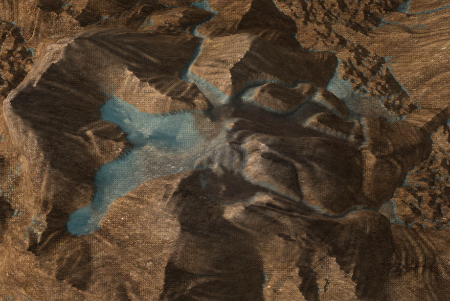
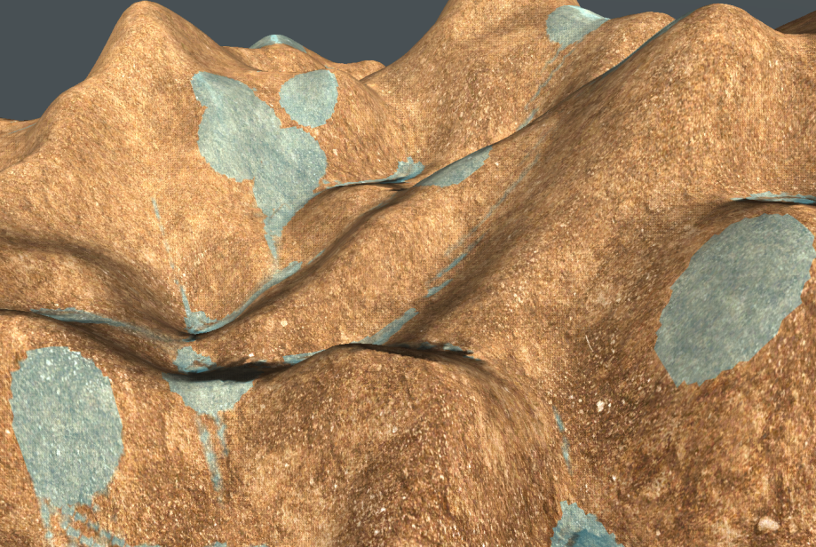
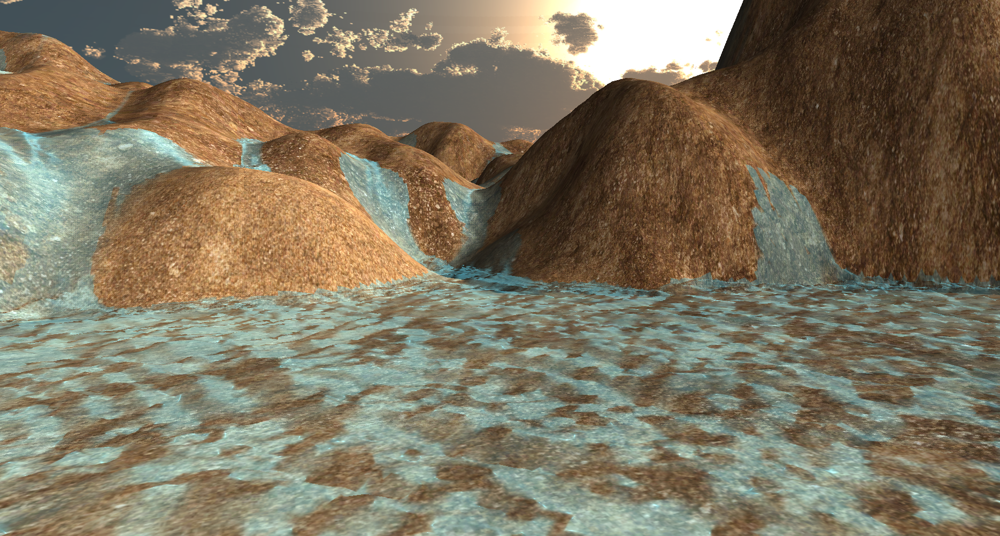

Abstract
We create an interactive hydraulic erosion simulator for the procedural generation of natural terrain. Our simulation uses a shallow water fluid model and velocity field for calculating the erosion and deposition process. The entire simulation is developed to run on the GPU, using C++ and OpenGL, allowing for impressive framerates and full interactivity. Our model illustrates the effects of rain and river sources and allows users to place river sources to sculpt the landscape to their liking. Additionally, our application produces realistic water visualization with fully simulated waves, directional lighting, and textured terrain.
Technical Approach
Simulation
We implemented the hydraulic erosion model from Xing Mei, Philippe Decaudin, and Bao-Gang Hu [1]. Here we only provide a summary of the erosion model which is explained with much greater depth in their paper.
The model is represented by a 2D grid, with each cell containing the following information: terrain height b, water height d, suspended sediment amount s, the outflow flux f = (f_L, f_R, f_T , f_B), and velocity vector v = (u, v). We then store all of this information in textures on the GPU to be passed into shaders: texture T1 containing b, d, and s; texture T2 containing all components of f; and texture T3 containing the components of v.
The following five steps provide a compact summary of the simulation process:
1.d_1 \leftarrow WaterIncrement(d_t)
At every time step water is added to the terrain through water sources (rivers) or through rain. Rain adds water from a random distribution and water sources are introduced by the user. For a given amount of water r_t(x,y) the water level is updated by: d_1(x, y) = d_t(x, y) + \Delta t \cdot r_t(x, y). This update is computed by a rain fragment shader and packed into T1. We choose to drop the rain in buckets instead of using something like a gaussian distribution, because completely uniform rain is a bit less interesting.
|

|

|
2. (d_2,\textbf{f}_t + \Delta t, \vec{\textbf{v}}_t+\Delta t) \leftarrow FlowSimulation(d_1, b_t,\textbf{f}_t)
Because this simulation step updates water, flux, and velocity, it requires three shaders to write to all three of the textures. First, we update the outflow flux. As an example, we will use f_L, but the same is done for all four components: f^L_{t+\Delta t} (x, y) = max(0, f^L_t (x, y) + \Delta t \cdot A \cdot g \cdot \frac{\Delta h^L (x, y)} {l})
A, g, and l are physical constants and \Delta h^L is the difference in total height (b + d) between the cell and its left neighbor. Then, to prevent the total flux from exceeding the current water amount, we scale the new fluxes by K = min(1, \frac{d_1 \cdot l_X \cdot l_Y}{ (f^L + f^R + f^T + f^B) \cdot \Delta t} ) , where l_X and l_Y are the grid distances in each direction.
Next, we update the water surface by taking in the flux from neighboring cells and sending out the cell’s outflow flux. We calculate the net change in water as \Delta V (x, y) = \Delta t \cdot (\sum{f_{in}} - \sum{f_{out}}) and update the water d_2(x, y) = d_1(x, y) + \frac{\Delta V (x, y)}{l_X \cdot l_Y}.
Finally, we update the velocity flow. Again, we will use the x component u as an example, but the process should be repeated for the y component v. First we find the average amount of water passing through in the x direction: W_X = \frac{f^R (x-1, y) - f^L (x, y)+ f^R (x, y) - f^L (x + 1, y)}{2}. Then, we calculate u = \frac{\Delta W_X }{l_Y \cdot \bar{d}}, where \bar{d} is the average water level between this and last step, \bar{d} = \frac{d_1+d_2}{2}.
|

|
3. (b_{t+\Delta t}, s_1) \leftarrow ErosionDeposition(\vec{\textbf{v}}_{t+\Delta t}, b_t, s_t)
The whole purpose of modeling water is for some soil to be carried away by the water as erosion. In this model the erosion-deposition process is affected by local tilt angle, water velocity, and the sediment capacity constant. First we calculate the sediment transport capacity C for the water flowing in cell (x,y): C(x, y) = K_c \cdot sin(\alpha (x, y)) \cdot |\vec{v}(x, y)|, where \alpha is the local tilt angle, \vec{v}is the water velocity, and K_cis the sediment capacity constant.
Next we check C against the suspended sediment value s of the cell. If C > s_t some soil is dissolved in the water. K_s is the dissolving constant. b_{t+\Delta t} = b_t - K_s(C - s_t) s_1 = s_t + K_s(C - s_t)
Conversely, if C \leq s_t some soil is deposited onto the terrain and removed from the water. K_d is the deposition constant. b_{t+\Delta t} = b_t + K_d(s_t - C) s_1 = s_t - K_d(s_t - C)
We also deviate from the reference and multiply C(x,y) by the height of the water at x,y, clamped between 0 and 1. Otherwise, an arbitrarily small amount of water could dissolve a lot of sediment which is not realistic.
4. s_{t+\Delta t} \leftarrow SedimentTransport(s_1, \vec{\textbf{v}}_t+\Delta t)
The sediment transport process is described by the equation \frac{\delta s}{\delta t} + (\vec{\textbf{v}} \cdot \Delta s) = 0. We get the update step by taking an Euler step back in time: s_{t+\Delta t} (x, y) = s_1 (x - u \cdot \Delta t, y - v \cdot \Delta t). When the step coordinates (x - u · ∆t, y - v · ∆t) don’t correspond to exact grid points, we use bilinear interpolation to interpolate the value of s_1 based on the four surrounding grid points.

|
5. d_{t+\Delta t} \leftarrow Evaporation(d_2)
Finally, some water gets evaporated into the air (assumes constant temperature) proportionally to the amount of water, based on the evaporation constant K_e : d_{t+\Delta t}(x, y) = d_2(x, y) \cdot (1 - K_e \cdot \Delta t)
Visualization
To visualize our results, we render in two passes -- one pass for the terrain, and another for the water. For the terrain, we use the b(x,y) value in the vertex shader to determine the height. Then, in the fragment shader we use a procedural texture, combining a dirt, sand, and rock texture according to perlin noise, lit with phong shading. For water, we use b(x,y) + d(x,y) for the height, and discolor it based on the amount of dissolved sediment, s(x,y). The water and terrain renderings are combined in a final shader, allowing us to shade the water based on how deep a projected camera ray travels before hitting something else. Also, the nice waves and ripples in the water are completely generated from the simulation and not a rendering illusion.
Additional Implementation and Challenges
We were having difficulties with unrealistically deep valleys and steep peaks from a positive feedback loop in the simulation. Essentially, water would choose to go down a certain route, eroding it a little, then it would continue to choose to go down that route again and again. While this is realistic to a degree, we were finding that large amounts of water (literal rivers worth) would create only very narrow channels, and no wide ones.
To solve this, we made a few changes/additions to the reference procedure. (1)When performing the erosion/deposition update, we adjust the dissolving rate based on Perlin noise and the height of the terrain, in order to mimic different materials (rocks, below the surface, tend to be more resistant to erosion). The inspiration for this tweak came from Ondřej Št’ava, Bedřich Beneš, Matthew Brisbin, and Jaroslav Křivánek [2], which demonstrated different sediment layers with different erosion characteristics. (2) At the end of every simulation cycle, we add a smoothing shader that, at local extrema, enforces the change in the terrain’s height to not be too large.
We found that to get the best results, we’ll make the smoothing initially very high and place sources, creating wide channels, then we introduce rain and lower the smoothing, creating thin cracks.
Lessons
Overall, this was a very interesting and educational project. We expanded our proficiency in writing shaders and we were able to apply many of the rendering techniques taught in CS184. One of the main problems we encountered was not planning sound infrastructure for the codebase before implementing the simulation. In future work, we should construct the project to be more extensible for additional cool features.
Results
You can use the left/right arrows to navigate the slideshow.
.png)
.png)
.png)
.png)
.png)
.png)
.png)
.png)
.png)
Videos
References
[1] Xing Mei, Philippe Decaudin, Bao-Gang Hu. Fast Hydraulic Erosion Simulation and Visualization on GPU. PG ’07 - 15th Pacific Conference on Computer Graphics and Applications, Oct 2007, Maui, United States. pp.47-56, ff10.1109/PG.2007.15ff. ffinria-00402079f
[2] Ondřej Št’ava, Bedřich Beneš, Matthew Brisbin, and Jaroslav Křivánek. 2008. Interactive terrain modeling using hydraulic erosion. In Proceedings of the 2008 ACM SIGGRAPH/Eurographics Symposium on Computer Animation (SCA ’08). Eurographics Association, Goslar, DEU, 201–210.
Contributions
Thank you Dylan for putting together the starter code, most of the C++/OpenGL simulation and rendering code, and the visualization shaders. Also, thank you for experimenting and doing a bunch of little things to improve the results slightly.
Thank you Newman for creating most of the user interface associated with changing simulation parameters, placing water sources, and controlling the camera. Also, for implementing the openGL terrain loader and writing the preliminary terrain shaders.
Thank you Hanlin for researching possible implementations and writing the shaders related to erosion simulation.